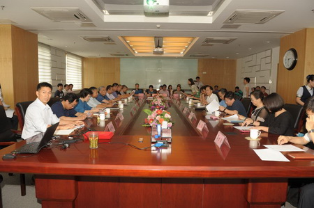
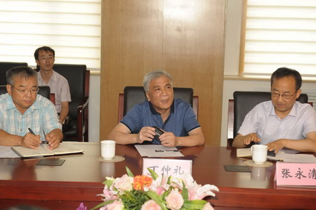
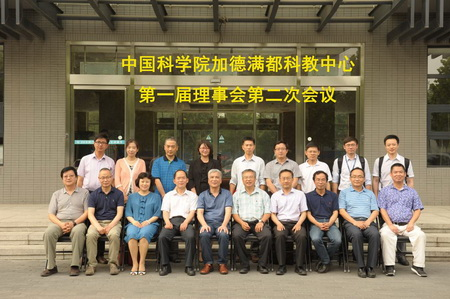

6月21日，“中国科学院加德满都科教中心”（以下简称“中心”）召开了第一届理事会第二次会议。会议由中心理事、国际合作局局长曹京华主持。中心理事会成员，院国际合作局、前沿科学与教育局、条件保障与财务局领导，依托单位青藏高原所所领导、管理骨干和专家共40余人参加了会议。
会上，中心主任姚檀栋院士从基本建设、科学研究、教育培训等几个方面简要介绍了中心取得的主要成果，认为中心的建设将服务于国家“一带一路”和南亚大通道战略布局。中心执行主任梁尔源汇报了中心建设的背景、定位、组织管理体系、在国内国际合作中发挥的重要作用等内容，重点就2015年以来中心的建设进展、主要科研成果、服务尼泊尔当地社会发展、人才培养、2016-2017年的建设和发展规划等进行了汇报；依托单位青藏高原所副所长赵平汇报了中心的基础设施建设最新进展；财务处处长康志焕介绍了中心的经费管理制度、2015和2016年度经费使用情况和2017年度经费预算。
围绕中心研究进展和发展规划，与会理事通过讨论形成若干建设性意见，并一致认为中心建设响应国家“一带一路”战略，聚焦前沿科学问题，在科学研究、人才培养等方面已经取得了很好的进展。
中心理事长丁仲礼副院长充分肯定了中心建立以来的工作进展，高度评价了中心在过去一年来获得的成果，并对中心后续的发展提出了四条主要建议：1）要思考如何将喜马拉雅山南坡和青藏高原地区的观测资料相结合，产出具有原创性的高水平研究成果；2）要结合当地的社会经济发展需求，围绕影响尼泊尔民计民生的迫切问题，发挥中国科学院的优势，为提高当地人民生活水平提供科技支持和服务；3）要长远规划对当地人才的教育与培训，不仅要提高当地的教育水平，更要培养有潜力的高端人才；培养人才要针对当地社会经济发展的迫切需求；4）要培养一批熟悉南亚地区自然及人文环境、能够在该地区潜心工作的科研人员，中国的科研事业要有走出去的决心和勇气，要让国内的科研人员走出去成为推动包括尼泊尔在内周边国家科技和经济发展的中坚力量。

会议现场

丁仲礼副院长作总结发言

合影留念